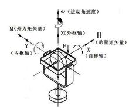
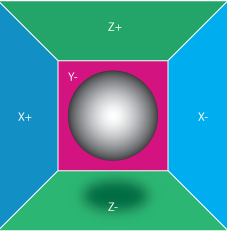

什么是惯性导航系统？惯性导航系统由哪些传感器组成？惯性导航系统的原理是什么？
先来看个度娘给定义：
惯性导航系统（INS，Inertial Navigation System）也称作惯性参考系统，是一种不依赖于外部信息、也不向外部辐射能量（如无线电导航那样）的自主式导航系统。其工作环境不仅包括空中、地面，还可以在水下。惯性导航的基本工作原理是以牛顿力学定律为基础，通过测量载体在惯性参考系的加速度，将它对时间进行积分，且把它变换到导航坐标系中，就能够得到在导航坐标系中的速度、偏航角和位置等信息。
惯性导航系统属于推算导航方式，即从一已知点的位置根据连续测得的运动体航向角和速度推算出其下一点的位置，因而可连续测出运动体的当前位置。惯性导航系统中的陀螺仪用来形成一个导航坐标系，使加速度计的测量轴稳定在该坐标系中，并给出航向和姿态角；加速度计用来测量运动体的加速度，经过对时间的一次积分得到速度，速度再经过对时间的一次积分即可得到位移。
从组成上来看，它由一个3轴陀螺仪和一个3轴加速度传感器组成。高端的飞控会做一份冗余，以提高测量精度。
- 陀螺仪
陀螺仪即角速度传感器，注意，这里说的是角速度而不是角度，角度是需要把角速度乘以时间算出来的。
陀螺仪说白了就是一个正在旋转的陀螺，跟我们小时候在地上用绳子打着转的陀螺一样一样的。陀螺仪测量角速度用到了陀螺的两个特性，定轴性以及进动性。
- 定轴性：当陀螺转子以高速旋转时，在没有任何外力矩作用在陀螺仪上时，陀螺仪的自转轴在惯性空间中的指向保持稳定不变，即指向一个固定的方向；同时反抗任何改变转子轴向的力量。这种物理现象称为陀螺仪的定轴性或稳定性。
-
进动性：转子高速旋转时，若外力矩作用于外环轴，陀螺仪将绕内环轴转动；若外力矩作用于内环轴，陀螺仪将绕外环轴转动。其转动角速度方向与外力矩作用方向互相垂直。这个比较抽象，要结合图看下才能理解，通俗点说，就是你推着自行车往前，自行车的论坛的轴和你的力是垂直的。

进动角速度的方向取决于动量矩H的方向(与转子自转角速度矢量的方向一致)和外力矩M的方向，而且是自转角速度矢量H以最短的路径追赶外力矩M。 进动角速度的大小取决于转子动量矩H的大小和外力矩M的大小,其计算式为进动角速度ω=M/H。
-
加速度传感器
多数加速度传感器是根据压电效应的原理来工作的。所谓的压电效应就是 "对于不存在对称中心的异极晶体加在晶体上的外力除了使晶体发生形变以外，还将改变晶体的极化状态，在晶体内部建立电场，这种由于机械力作用使介质发生极化的现象称为正压电效应 "。说人话，就是东西压在板子上，板子受到的力能通过一些手段测出来而已。

脑补一下，如果一个盒子的六个面都是用这种板子做的，然后里面放着一个球，然后球在每个面上的压力都能轻而易举的计算出来，用下初中的知识F = ma，也就是伟大的牛顿第一定律，空间上的加速度也就求出来了。
知道了角速度，线加速度，再加个时间积分，推算运动轨迹就不成问题了。
另外网上经常能看到一个概念就是倾角传感器，其实这个不属于飞控的传感器，不要跟陀螺仪搞混了，飞控上面的角度变化是由陀螺仪上测出来的角速度积分得来的。倾角传感器侧重于静态测量，而陀螺仪侧重于动态测量，这是它们最大的区别。
其实惯性导航系统的应用场景还是非常丰富的，除了四轴的飞控以外，像火箭的导航系统，游戏手柄，手机上的摇一摇功能，手环的计步器功能都用到了它。
Comments
There are no comments yet.